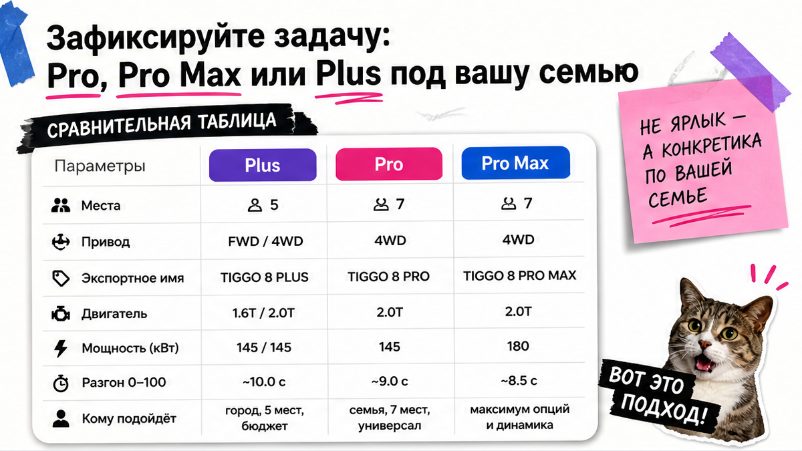
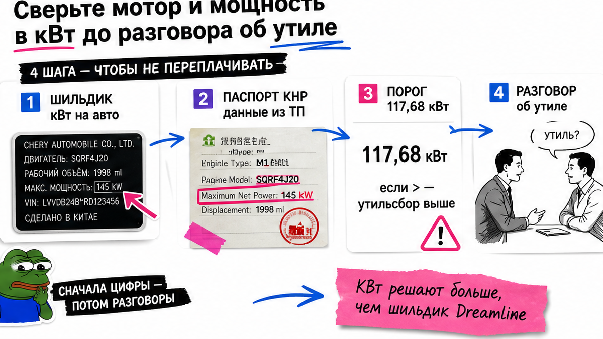
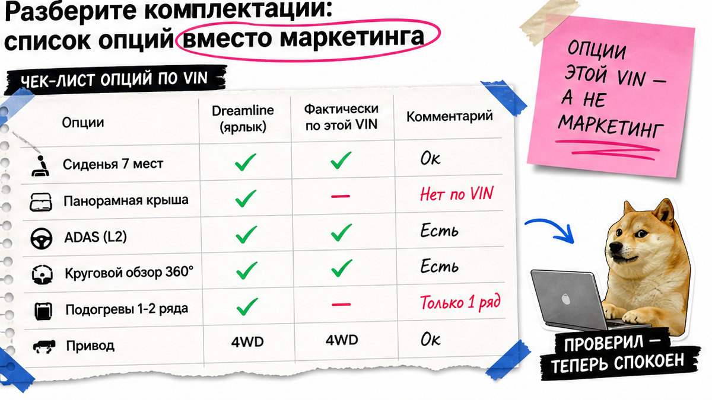

Семья с двумя детьми смотрит объявление "Tiggo 8 Pro Max Dreamline почти новая из Китая дешевле дилера", менеджер торопит депозит "пока лот не ушёл", а в чате нет ни VIN, ни фото шильдика с кВт, ни даты учёта в КНР. Типичная боль: боитесь перевести деньги за "тот самый" Chery Tiggo 8 Pro, а приедет другая комплектация, другой мотор или машина без бумаг на вывоз. Ниже – спокойный разбор до оплаты: как сверить имена Plus/Pro/Pro Max, мощность в кВт и 12 стоп-пунктов, чтобы не платить вслепую.
Инсайт до депозита: В Китае "Tiggo 8 Plus" часто едет на экспорт как "Tiggo 8 Pro / Pro Max", а домашний "Tiggo 8 Pro" – отдельная линейка. Китайский 1.6T у Pro 2025 пишут как 145 кВт, в российских каталогах Pro Max Dreamline – около 137 кВт / 186 л.с.; путать имена и кВт до депозита опасно для утиля. Депозит – только после совпадения VIN, списка опций и понятного маршрута до СВХ Владивосток.
Мы в Авто-Сейлс во Владивостоке видим, чем объявление отличается от реальной машины. Правило простое: не платите, пока не сверили бумажки. Готовые суммы пошлин здесь не фиксируем – актуальный расчёт берут в каталоге.

Сначала не лот, а сценарий. Город или трасса? Нужны пять или семь мест? Полный привод или передний хватит? От этого зависит ветка поиска, а не ярлык в рекламе.
На пальцах: trim – уровень комплектации (набор опций). В Китае дома чаще Plus и отдельный Pro; на экспорт Plus нередко зовут Pro / Pro Max. Elite / Dreamline / Ultimate – словарь дилера РФ, а не гарантия той же машины под тем же именем.
| Что видите в объявлении | Что проверить до депозита | Риск, если не сверить |
|---|---|---|
| Tiggo 8 Pro Max Dreamline | Китайское имя (Plus / Pro / Pro Max), год, мотор, места | Приедет другая ветка линейки |
| 1.6 / "почти 160 сил" | Мощность в кВт из китайских бумаг | Сюрприз по утильсбору |
| C-DM / гибрид / PHEV | Системная мощность и отдельный расчёт | Не "тихий семейный" бензин |
| "Как Ultimate на фото" | Список опций именно этой машины | Доплата за то, чего нет |
Например, запишите в чат одну строку: "модель + год + мотор + 5/7 мест + привод". Сделайте: выберите ветку до поиска лота. Не делайте: верить только русскому ярлыку Dreamline без китайского имени в договоре.

кВт – киловатты, единица мощности в документах. Утиль смотрят по мощности, а не по фразе "почти те же 160 сил". Порог льготы в открытых разборах 2026 – 117,68 кВт (около 160 л.с.). Китайские паспорта пишут кВт – сверяйте их.
По открытым источникам 2025–2026: у китайского Tiggo 8 Pro facelift – 1.6T около 145 кВт и 2.0T около 187 кВт; у РФ Pro Max Dreamline ориентир около 137 кВт / 186 л.с. для 1.6. Разница – повод остановиться до оплаты.
Гибрид C-DM / PHEV (бензин + батарея) в экспортных карточках Tiggo 8 Plus – системная мощность порядка 265 кВт. Это не дефолт "просто покататься". На практике берите C-DM только с отдельным расчётом.
Сделайте: выпишите кВт и объём двигателя из китайских бумаг в чат. Не делайте: считать мощность "на глаз" по российскому буклету.

Elite, Dreamline, Ultimate – ярлыки в РФ. На живой машине из Китая важнее список: 7 мест, полный привод (AWD), панорама, адаптивный круиз (ACC), экстренное торможение (AEB).
Типичная ошибка – купить "как на фото топа", а радары и железо ADAS (системы помощи водителю) окажутся другими. В китайских отзывах как раз пишут: фото ≠ железо. Просите живое видео салона, третьего ряда и экрана именно этой машины.
После ввоза часто всплывают рывки робота DCT и сырой мультимедиа. Это не авто-стоп, но честное ожидание: закладывайте время на настройку, а не сюрприз в день выдачи.
Сделайте: таблицу "нужно / не нужно" до торга. Не делайте: доплачивать за буклет Dreamline без проверки опций на видео.
VIN – 17-значный идентификатор кузова, как паспорт машины. Он должен совпасть на шильдике, в договоре, в инвойсе и в отчёте инспекции. Отчёт – по прямой ссылке на VIN, не "скрином из чата".
Схема до депозита:
Китайское имя и год → VIN везде одинаковый → кВт из бумаг → дата учёта в КНР (правило 180 дней) → живое видео → список опций → счёт юрлица из договора → решение платить или нет
В реальном проекте "лот уйдёт сегодня" часто значит "не читайте бумаги". Сделайте: стоп при любом несовпадении VIN. Не делайте: депозит "за бронь" без отчёта и видео.
СВХ – склад временного хранения на таможне после прибытия. Дальше обычно СБКТС (документ для постановки на учёт) и ЭПТС (электронный паспорт авто). Эти шаги часто "забывают" в устной смете – спросите отдельно, без готовых сумм из статьи.
Маршрут новичка:
Экспортёр в КНР → доставка → СВХ Владивосток → таможня → СБКТС → ЭПТС → выдача / доставка по РФ
Уточните экспортёра и получателя платежа. Офис Авто-Сейлс во Владивостоке (Днепровская 40а, стр. 4) – хаб цепочки от подбора до выдачи, без форм на странице блога.
Сделайте: выпишите порядок шагов и ответственных. Не делайте: считать, что "под ключ" = только цена авто в объявлении. Избегайте устных смет без маршрута до СВХ.
Критерий успеха простой: перед любым переводом денег у вас совпали VIN на шильдике, в договоре и в отчёте; мощность в кВт сверена с порогом утиля; комплектация зафиксирована списком опций; маршрут до СВХ Владивосток понятен без сюрпризов. Практический результат – вы сможете собрать свой чеклист из 12 пунктов (шаг за шагом) и не перевести депозит вслепую.
Хоть один пункт красный – депозит отложите. Фото третьего ряда чек-лист не заменяет.
Нужен разбор комплектации Chery Tiggo 8 Pro / Pro Max из Китая – начните с каталога Авто-Сейлс до перевода денег. Статичных цен и калькулятора пошлин здесь нет: считаем под VIN и дату.
Материал проверен: Редакция Авто-Сейлс (эксперты по авто под заказ из Японии, Кореи и Китая).
Достоверность: факты сверены с открытыми источниками на 30.10.2026 (страницы Chery CN / CarNewsChina по линейке Tiggo 8, naming Wikipedia, разборы правила 180 дней и порога 117,68 кВт, чек-листы проверки до оплаты) и практикой сопровождения заказов во Владивостоке; актуальные расчёты – в каталоге.
Смотрите китайское имя в договоре, а не только русский ярлык. Plus на внутреннем рынке часто уходит на экспорт как Pro / Pro Max; отдельный китайский Pro – другая домашняя ветка. Зафиксируйте модель, год, мотор и число мест одной строкой до депозита.
В РФ ориентиры Elite / Dreamline / Ultimate (иногда с AWD). Из Китая важнее список опций на конкретной машине: 5 или 7 мест, привод, панорама, ADAS. Сверьте видео этой машины, а не буклет.
Одинаковый VIN везде, кВт и объём из китайских бумаг, дату учёта в КНР под правило 180 дней, экспортёра и счёт юрлица. Нет пакета – нет перевода.
Только с отдельным расчётом. Системная мощность PHEV заметно выше бензинового Pro; не смешивайте ветки "по ощущению". Если нужен обычный бензин – явно запретите подмену на C-DM в договоре.
Китайские документы пишут кВт. У 1.6T цифры в CN и в РФ-буклетах могут расходиться (ориентиры около 145 кВт vs около 137 кВт). Для утиля берите кВт из бумаг на машину.
Остановить сделку. Напишите: нужен VIN, шильдик, отчёт по прямой ссылке и живое видео до оплаты. Давление "лот уйдёт" без бумаг – красный флаг, не скидка.